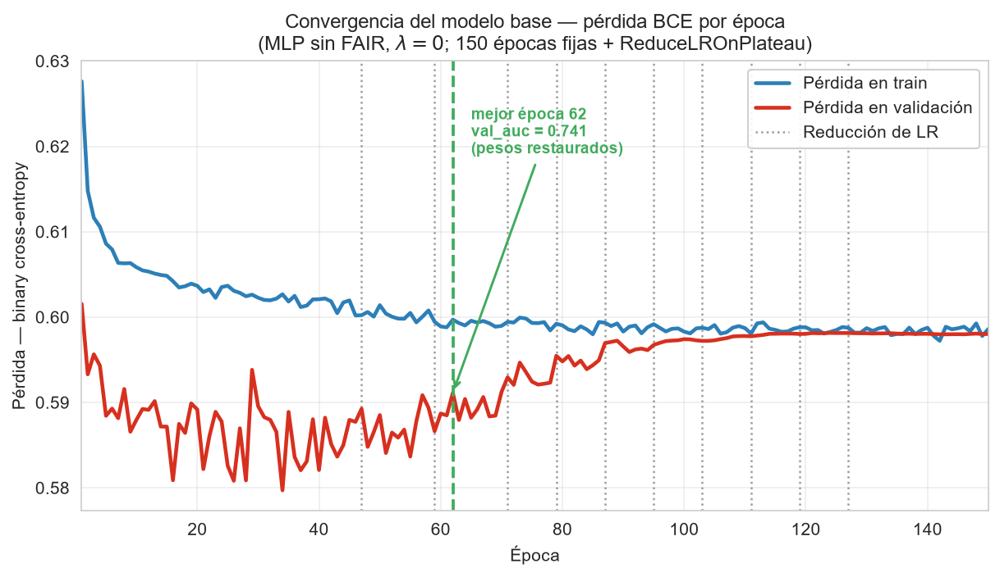
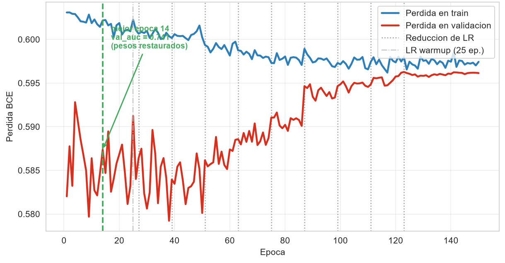
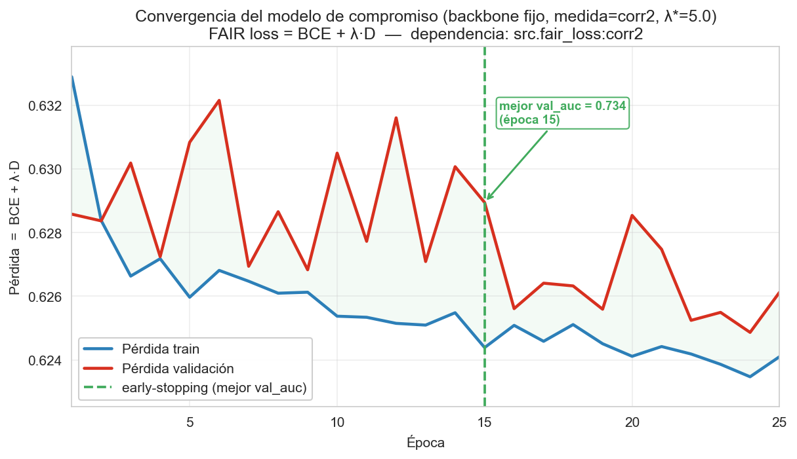
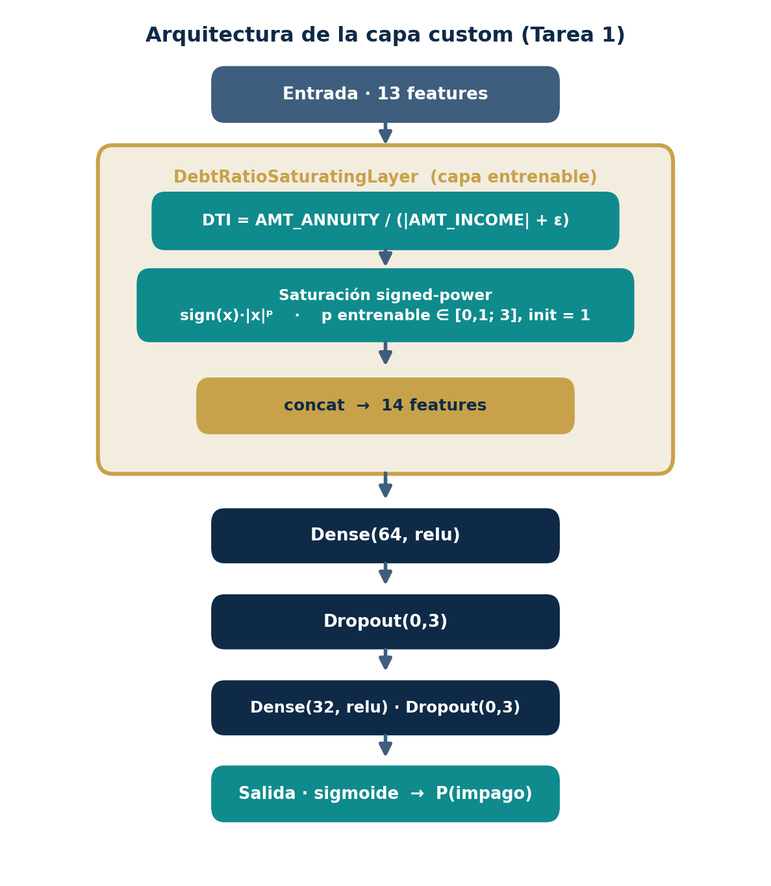
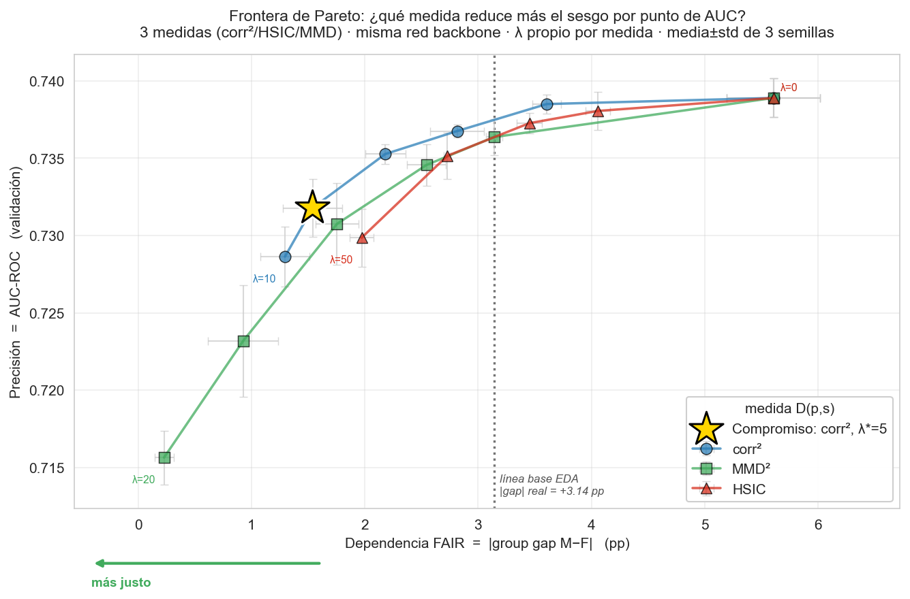
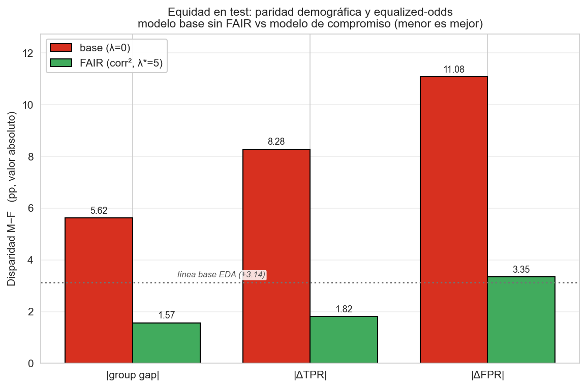
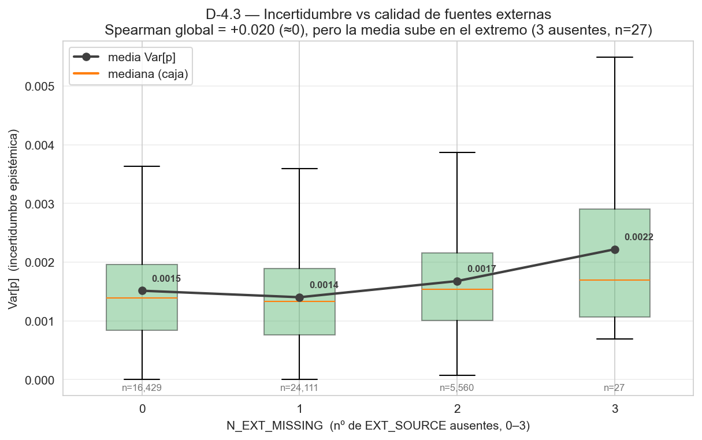
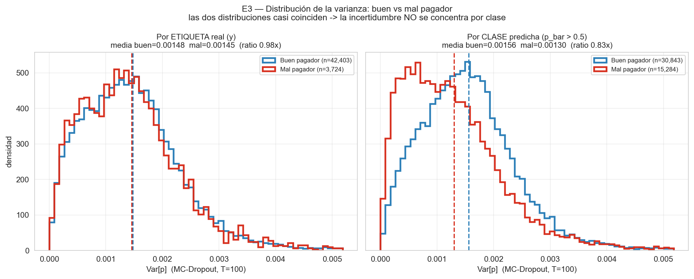

Entrenamos un clasificador neuronal para estimar el riesgo de impago en solicitantes con poco historial crediticio. Sobre una arquitectura base añadimos cuatro componentes: una capa con una restricción de dominio (ratio de endeudamiento saturado por un exponente entrenable), una función de coste que penaliza la dependencia estadística entre la predicción y el género, una búsqueda de topología con Keras Tuner sobre la frontera precisión–equidad, y una estimación de incertidumbre por MC-Dropout. El modelo de compromiso reduce la brecha de género un 72 % a cambio de menos de un punto de AUC en test, y su varianza aumenta cuando faltan las fuentes externas, lo que permite señalar las decisiones menos fiables para revisión.
| Dataset | Home Credit Default Risk — 307.511 registros × 122 variables |
| Variable objetivo | TARGET — impago (1) frente a pago a tiempo (0) |
| Variable sensible | CODE_GENDER — no se usa como entrada del modelo |
| Componentes | Capa custom (DTI) · FAIR loss (corr²) · Keras Tuner · MC-Dropout |
Construimos un clasificador de riesgo de crédito y le añadimos control de equidad de género e incertidumbre. El resultado principal: recortamos el 72 % del gap entre hombres y mujeres pagando menos de 1 pp de AUC.
El problema es conceder crédito a clientes con poco historial financiero. Predecimos TARGET (1 = dificultades de pago) a partir de ingresos, anualidades y las tres fuentes de score externo EXT_SOURCE_1/2/3. Decidir bien y decidir de forma justa pesan lo mismo aquí.
Los datos están muy desbalanceados: solo el 8,07 % de los clientes impaga, una proporción de 11,4:1. Eso descarta la accuracy, porque un clasificador que siempre prediga "paga" acierta el 91,93 % sin aprender nada. Medimos con AUC-ROC, que ordena el riesgo con independencia del umbral.
El gap bruto de impago real entre hombres y mujeres es de +3,14 pp (10,14 % frente a 7,00 %). Importa por dónde se cuela en el modelo. EXT_SOURCE_1, la variable más predictiva, correlaciona −0,31 con el género y actúa de proxy: en el subconjunto donde está presente, el gap baja de +2,51 a +0,02 pp al controlar por ella. Por eso borrar el género no arregla el sesgo. Conviene no restar las dos cifras, porque son universos distintos, pero la conclusión cualitativa se sostiene en ambos.
Las fuentes externas tienen muchos nulos: 56,4 % en EXT_SOURCE_1, 19,8 % en EXT_SOURCE_2 y 0,2 % en EXT_SOURCE_3. La ausencia no es ruido. Predice el impago casi de forma monótona: con ninguna fuente ausente es del 7,3 %, con una sube al 8,2 % y con dos llega al 9,9 %. El preprocesado conserva esa señal con flags explícitos en lugar de limitarse a imputar.
El pipeline está pensado para evitar fugas de información y el modelo base fija la línea de rendimiento que las tareas posteriores tienen que batir.
Partimos de un split estratificado por TARGET 70/15/15 (semilla 42). Todos los estadísticos se calculan solo sobre train: medianas de imputación, topes de winsorización y escalado, de modo que val y test nunca contaminan el ajuste. Los tamaños finales son train 215.254, val 46.126 y test 46.127.
log1p en ingreso/crédito/anualidad y edad en años.La arquitectura es un MLP compacto: Dense(64,relu) → Dropout(0,3) → Dense(32,relu) → Dropout(0,3) → Dense(1,sigmoid). Se entrena con BCE y Adam, monitorizando AUC, con class_weight balanceado {0: 0,544, 1: 6,19} para compensar el desbalance. El dropout 0,3 va fijo a propósito: además de regularizar, es la palanca que reutilizan el tuner (Tarea 3) y la estimación de incertidumbre por MC-Dropout (Tarea 4), que necesita dropout activo en inferencia.
En test, la base marca AUC 0,7437, accuracy 0,690 (umbral 0,5 provisional) y un group gap de 5,358 pp. Ese es el punto que las tareas de justicia deben mejorar sin perder demasiada precisión.



Inyectamos conocimiento de dominio en la red con una capa Keras a medida que calcula el ratio de endeudamiento y lo satura con un exponente entrenable.
El ratio de endeudamiento (DTI) compara lo que el cliente paga periódicamente con lo que ingresa. La capa lo implementa como DTI = AMT_ANNUITY / (|AMT_INCOME_TOTAL| + ε), con ε = 0,25 y recorte del cociente a ±5. Usamos el valor absoluto del ingreso porque, tras log1p y escalado, cerca de la mitad de los valores quedan negativos en torno a media cero. El epsilon es grande a propósito: con el ingreso ya escalado, |income| puede acercarse a cero y uno diminuto dispararía el ratio. El clip a ±5 mantiene la estabilidad numérica.
Sobre ese ratio aplicamos una saturación de potencia con signo, sign(x)·(|x|+1e-7)^p. El signo es necesario porque x^p con p no entero y x<0 da NaN, y las entradas llegan estandarizadas. El exponente p es un único peso escalar entrenable, inicializado en 1,0 (la capa arranca como la identidad) y acotado a [0,1 ; 3]. Con p<1 comprime la cola, con p>1 la expande. La capa concatena el DTI saturado como columna extra, pasando de 13 a 14 features, y se coloca la primera, antes de las densas.
La elección la respalda el EDA. El ingreso tiene un skew de unos 392, con una cola larguísima que una saturación p<1 ayuda a aplanar, y el DTI guarda una relación no monótona con el impago que una división explícita captura sin gastar parámetros. En la práctica la red converge a p ≈ 0,87, sin tocar los topes, con AUC test 0,7437.

DebtRatioSaturatingLayer va primera: calcula el DTI, lo satura con sign(x)·|x|ᵖ y concatena la columna (13 + 1 = 14 features) antes del bloque denso.La capa es correcta y estable, pero no mejora el AUC ni reduce el gap respecto a la base. Opera sobre features que ya pasaron por log1p, winsorización y escalado, así que su DTI es un proxy del ratio en escala transformada, no el cociente euros/euros crudo. Su aportación es metodológica: muestra cómo se construye una restricción matemática entrenable dentro de Keras.
Como borrar el género no quita el sesgo, penalizamos la dependencia estadística entre la predicción y el género durante el entrenamiento.
La idea cabe en una loss aumentada: L = BCE(ŷ, TARGET) + λ·D(ŷ, CODE_GENDER). El primer término es la clasificación; el segundo, una medida de dependencia D entre la predicción y el género, pesada por λ. Ese λ funciona como multiplicador de Lagrange: con λ=0 recuperamos la base, y al subirlo forzamos independencia a costa de precisión. Barrerlo traza la frontera de Pareto.
D opera sobre la probabilidad post-sigmoide, no sobre el logit: queda acotada en [0,1] y es coherente con el group gap. El género solo se usa en entrenamiento, nunca como input: viaja empaquetado junto al target como y_true = [TARGET, S], que la loss desempaqueta dentro. En inferencia desaparece.
Probamos tres medidas de dependencia:
O(n), solo momentos del batch.n×n y con S binaria se diluye con el desbalance (registra ~0,02).P(ŷ|S=1) contra P(ŷ|S=0) como problema de dos muestras; también opera sobre kernel n×n.Adoptamos corr² como penalización principal. Para un atributo binario la diferencia entre grupos es básicamente un desplazamiento de medias, que es justo lo que mueve el gap, y corr² lo recoge bien con coste lineal. HSIC y MMD necesitan matrices n×n inviables sobre los 46k registros de validación sin submuestrear. Un apunte de contexto: en el barrido aislado (NB05) ganó MMD con λ=10, mientras que en el integrado de la Tarea 3, con backbone fijo y class_weight, el compromiso fue corr² λ=5. Son experimentos distintos, así que la mejor medida cambia con ellos.
HSIC y MMD usan un ancho de banda σ fijo por defecto, sin la heurística de la mediana de distancias. No afecta al compromiso final, que es corr², pero afinar los kernels exigiría implementarla.
¿Cuánto cuesta ser justo? Para responderlo dejamos que un buscador automático fije la arquitectura y luego recorrimos la frontera precisión-justicia entera.
Comparamos RandomSearch y Hyperband en igualdad de condiciones: mismo espacio, mismo λ piloto, objective=val_auc sobre validación y sin tocar test. Quedaron en empate técnico (Hyperband 0,7374 en 281 s, RandomSearch 0,7379 en 257 s). Como la diferencia cae por debajo de 0,001, la lógica se queda con la opción más barata, RandomSearch. Coincide con lo que ya documentaron Bergstra y Bengio (2012): la búsqueda aleatoria rinde sorprendentemente bien.
El buscador explora cinco palancas:
∈ [1, 3]∈ [16, 128], paso 16∈ [0,1 ; 0,5], siempre presente∈ [1e-4, 1e-2], escala logarítmica{relu, tanh}El dropout nunca vale cero porque alimenta el MC-Dropout de la Tarea 4. La penalización λ_fair queda fuera del tuner, como eje externo: el buscador optimiza un solo escalar y la frontera hay que trazarla aparte recorriendo λ. El ganador es deliberadamente sencillo: 1 capa, 64 unidades, dropout 0,3, relu, lr≈0,0072. Añadir profundidad no compraba AUC.
La frontera se traza con la topología fija del backbone y un barrido sobre λ repetido con 3 semillas (42, 7, 123), reportando media ± desviación típica. En el eje X va la dependencia FAIR y en el Y la AUC de validación; los puntos salen no dominados.

El precio resulta barato. El group gap baja un −72 % (5,615 → 1,568 pp) mientras la AUC cede solo −0,59 pp frente a la base comparable del tuner (misma topología y mismo class_weight), o −0,92 pp si la referencia es la base 03 de la sección 2. El equalized-odds mejora en las dos patas: ΔTPR pasa de 8,28 a 1,82 pp y ΔFPR de 11,08 a 3,35 pp. Gana corr² con λ=5 por el criterio de presupuesto (coste en AUC ≤ 1 pp y, dentro de ese margen, mínimo gap). Con género binario la dependencia es un desplazamiento de medias, y la penalización lineal de corr² compra más justicia por punto de AUC que HSIC o MMD.

Un modelo de crédito debería indicar cuándo su predicción es menos fiable.
Aplicamos MC-Dropout con T=100 sobre el modelo de compromiso de la Tarea 3, dejando el dropout 0,3 activo en inferencia (training=True). No añadimos dropout nuevo. Por fila salen dos números: la probabilidad de consenso p̄, que fija la clase, y la varianza Var[p], que mide la incertidumbre epistémica. Promediar las 100 pasadas no degrada la precisión: el AUC de p̄ es 0,7346, casi el 0,7347 heredado. T=100 es holgado porque la curva de estabilidad se aplana mucho antes.
Globalmente la relación es débil: el Spearman entre Var[p] y el número de fuentes externas ausentes es de solo +0,02. Pero en el extremo, sin ninguna fuente externa, la varianza media sube de 0,00152 a 0,00222, un +47 %. La duda crece, sí, justo donde la entrada es más pobre.

Ese repunte se apoya en un grupo de n=27 filas de las 46.127 de test, así que señala una tendencia, no una cifra fina.

El entregable obligatorio compara la varianza de buenos pagadores y malos, y salen casi iguales (0,00148 frente a 0,00146). Lo que dispara la duda es la pobreza de la información, no si el cliente paga. La incertidumbre aleatoria p(1−p) y la epistémica Var[p] se relacionan pero no coinciden (Spearman −0,58). La varianza sirve además de alarma: el 10 % de filas con más Var[p] acumula más error real (14,7 % frente a 12,9 %), buen criterio para derivar expedientes a revisión humana. El umbral óptimo por coste (con C_FN=5) sale en τ=0,66, por encima de 0,5, porque el class_weight balanceado infla las probabilidades.
La prueba final se hace en test, 46.127 registros que ningún modelo vio durante el entrenamiento ni el ajuste; la tabla E5 enfrenta la línea base a batir con el modelo FAIR de compromiso.
| Modelo | medida | λ | AUC test | group gap (pp) | ΔTPR (pp) | ΔFPR (pp) |
|---|---|---|---|---|---|---|
| base 03 (MLP sin FAIR) | — | — | 0,7437 | 5,358 | — | — |
| base tuner (λ=0, +capa custom) | — | 0 | 0,7404 | 5,615 | 8,282 | 11,076 |
| ★ mejor FAIR (corr², λ=5) | corr² | 5 | 0,7345 | 1,568 | 1,817 | 3,349 |
Frente a la base comparable del tuner (misma topología y mismo class_weight), activar la penalización FAIR recorta el group gap de 5,615 a 1,568 pp, un −72 %, a cambio de −0,59 pp de AUC. Contra la base 03 de la sección 2 el coste sube a −0,92 pp, igualmente pequeño. El equalized-odds baja en las dos patas (ΔTPR 8,28→1,82 pp, ΔFPR 11,08→3,35 pp), así que hombres y mujeres reciben tasas más parejas de acierto y de falsa alarma. El mejor FAIR (corr², λ=5) es el que gana en test: casi tan preciso como el mejor clasificador puro y bastante más justo.
El taller pedía un modelo de crédito que acierte, que no discrimine por género y que reconozca su propia incertidumbre.
La restricción vive en la capa DebtRatioSaturatingLayer: un ratio deuda-ingreso saturado con sign(x)·(|x|+1e-7)^p, cuyo exponente p es entrenable y queda acotado a [0,1 ; 3] (init 1,0, la identidad). Un solo peso, dentro de un rango con sentido económico. La dependencia que entra en la loss es corr² sobre la probabilidad post-sigmoide: con género binario capta el desplazamiento de medias que mueve el gap, con coste O(n).
Poco. El modelo de compromiso (corr², λ=5) recorta el group gap un 72 % y solo pierde medio punto de AUC frente a la base comparable del tuner, algo menos de un punto frente a la base 03. La mejora se confirma en equalized-odds, que cae en sus dos componentes.
La relación global es débil (Spearman +0,02), pero sin ninguna fuente externa la varianza de MC-Dropout sube un 47 %. Un control limpio lo apoya: buenos y malos pagadores tienen casi la misma varianza, así que la duda la marca la calidad de la entrada y no la etiqueta.
Limitaciones: la capa custom es correcta pero no mejora el AUC ni el gap, porque opera sobre features ya transformadas; HSIC y MMD usan un σ fijo sin la heurística de la mediana; y el repunte del 47 % se apoya en solo n=27 registros.
Queda un clasificador que ajusta bien, no discrimina por género y reconoce cuándo no está seguro.